# Don't try this at home!
# Usually you do want to notice if warnings come up!
import warnings
from tqdm import TqdmWarning
warnings.filterwarnings("ignore", category=FutureWarning)
warnings.filterwarnings("ignore", category=TqdmWarning)ELIXIR Spatial Transcriptomics Course
Practical 1b: Segmentation free cell identification using sainsc
Date: 2025-01-22
Author(s): Niklas Müller-Bötticher, Rasool Saghaleyni
Author(s) email: niklas.mueller-boetticher@bih-charite.de, rasool.saghaleyni@scilifelab.
⚠️ Note: The proper environment for this notebook is sib_sainsc_env. It can be activated by selecting the kernel in the Jupyter notebook.
Imports
First we are going to load all necessary packages for the analysis.
We will use sainsc for the main analysis and scanpy to cluster the cell-types in our unsupervised analysis.
from pathlib import Path
import pandas as pd
import scanpy as sc
from sainsc.io import read_Xenium
from sainsc.utils import celltype_signaturesFirst we define the paths to our directory where we keep the Xenium sample that we want to analyze.
# TODO: adjust to the correct path
data_path = Path("data")
sample_path = data_path / "Xenium_V1_FFPE_TgCRND8_17_9_months"Before we start it is good to get a brief overview of the two main Classes in sainsc.
GridCounts: This class holds the data as a dictionary of sparse matrices of the same shape. You rarely will need to interact with it directly unless you want to, filter the genes or crop/mask the sample. It mostly behaves like a Python dictionary but is implemented in Rust. Therefore, iterating over the count matrices of each gene might be slow as the data needs to be transformed every time.LazyKDE: This is the class that you mostly will interact with. It contains aGridCountsinstance in itscountsattribute and otherwise exposes almost all methods necessary to perform the analysis.
We will use the transcripts.csv.gz (or transcripts.parquet) to load the locations of all identified transcripts. The control probes from the Xenium study will be automatically filtered out.
We can furthermore specify the size of the bins we will asign the transcripts into (by default this is set to 0.5 um) and the number of threads we want to use to process the data.
There are options to directly load data from common file formats/technologies such as Stereo-seq, Xenium, and Vizgen. If none of the options fit for your use case you can have a look at LazyKDE.from_dataframe or GridCounts.from_dataframe methods.
brain = read_Xenium(sample_path / "transcripts.csv.gz", n_threads=8)
brainLazyKDE (8 threads)
genes: 347
shape: (13311, 10545)
resolution: 500.0 nm / pxThe LazyKDE object will give us some useful information when we print it; including the number of genes, the size of the sample in pixels and the resolution.
Next we can get a quick overview of our sample by calculating the total mRNA and plotting it. If we can squint our eyes, we can notice some technical artifacts; the mRNA seems to be lower at certain locations that seem to form a grid, likely along the stitching borders.
brain.calculate_total_mRNA()
_ = brain.plot_genecount(im_kwargs={"vmax": 2})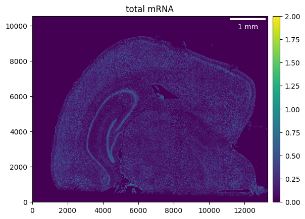
We can crop our sample to remove some “dead” space to further speed up processing or to “zoom” into a smaller region of interest (ROI).
Alternatively, we could also use the GridCounts.filter_mask method to use an arbitrary binary mask to determine the ROI. All the transcripts outside our ROI will then be dropped. This allows us to filter the ROI to any shape desired.
brain.counts.crop((500, None), (None, 10_000))
brain.calculate_total_mRNA()
_ = brain.plot_genecount(im_kwargs={"vmax": 2})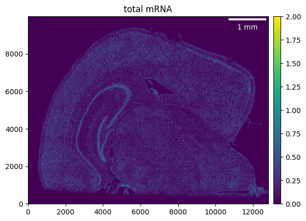
It is always a good idea to also check the distribution of transcripts detected per gene.
_ = brain.plot_genecount_histogram()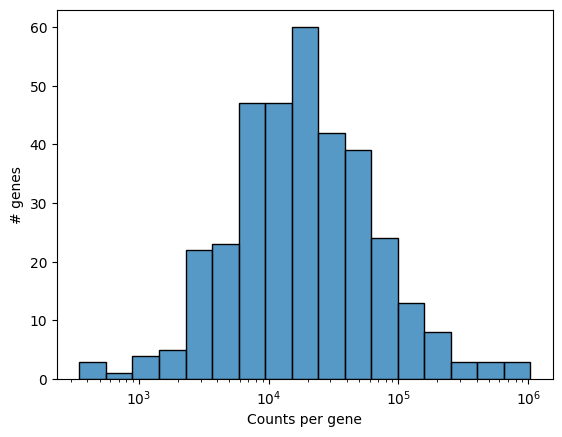
The kernel defines on how we will smooth the gene expression. The go-to choice is to use a gaussian kernel, however any square numpy.ndarray can be used.
The size of the kernel can either be defined in pixels or in µm (if the resolution is set).
The required kernel size may depend on the technology. Here, we will use 2.5 µm.
brain.gaussian_kernel(2.5, unit="um")Now we can first smooth the total mRNA and visualize it.
brain.calculate_total_mRNA_KDE()
_ = brain.plot_KDE()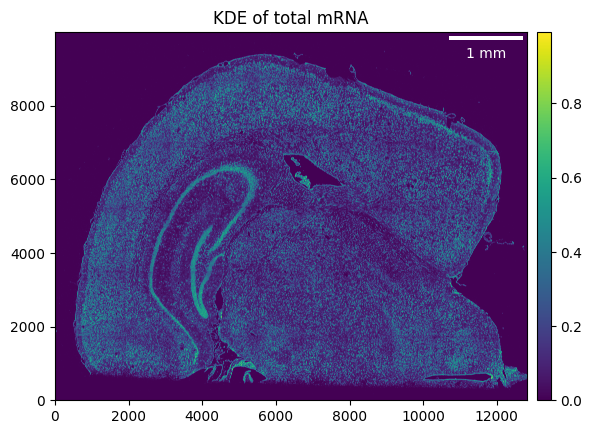
The distribtuion of the smoothed gene expression can be used to determine a threshold to use for filtering out background noise. Here, a value of ~ 0.02 seems to be a good first choice.
_ = brain.plot_KDE_histogram(bins=200)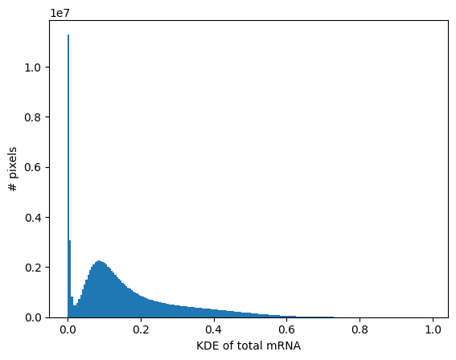
_ = brain.plot_KDE_histogram(bins=100, range=(0, 0.1))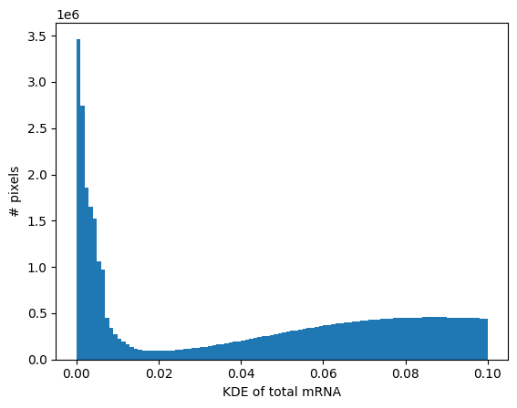
Even though in the images above it looked like the background was empty, adjusting the color scale will quickly prove us that this is not the case.
Here, masking the ROI could be used to completely remove those counts. Filtering the background, on the other side, will only affect the visualization but not the processing.
_ = brain.plot_KDE(im_kwargs={"vmax": 0.02})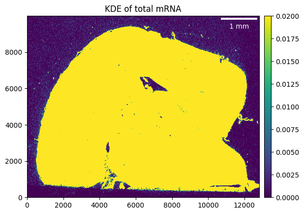
Now we can filter the background. Note, that later we can further refine this and define background filter on the total mRNA KDE per cell type.
brain.filter_background(0.02)Unsupervised analysis
To generate the cell-type map we will need a set of gene expression signatures. These can either be derived from previous studies e.g. scRNAseq or we can identify them de novo from the sample we are analysing.
The de novo approach works by finding the local maxima of the gene expression and treating these as proxies for cells. We can then use standard single-cell/spatial workflows to process and cluster the cells. The cell-types indentified in the clustering can then be used to calculate the gene expression signatures.
The first step is to identify the local maxiam, we set a minimum distance to avoid sampling too many close-by spots.
brain.find_local_maxima(5)
brainLazyKDE (8 threads)
genes: 347
shape: (12811, 10000)
resolution: 500.0 nm / px
kernel: (21, 21)
background: set
local maxima: 84858Find cell-type signatures
Next we can load the local maxima into and AnnData object and then proceed to identify clusters.
local_max = brain.load_local_maxima()
local_maxAnnData object with n_obs × n_vars = 84858 × 347
obs: 'total_mRNA_KDE'
obsm: 'spatial'# for reproducibility
random_state = 42sc.pp.normalize_total(local_max)local_max.layers["counts"] = local_max.X.copy()sc.pp.log1p(local_max)
sc.pp.pca(local_max, random_state=random_state)
sc.pp.neighbors(local_max, random_state=random_state)
sc.tl.umap(local_max, random_state=random_state)sc.tl.leiden(local_max, resolution=2, random_state=random_state)
sc.pl.umap(local_max, color="leiden")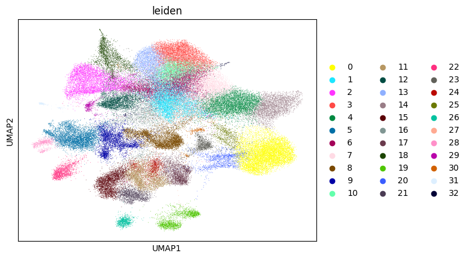
After we have identified our cell-types/clusters we can easily calculate the gene expression signatures.
Note, the gene expression signatures should be strictly positive i.e. they should not be calculated from data that has been standardized or similar.
signatures = celltype_signatures(local_max, celltype_col="leiden")Generate cell-type map
To generate the cell-type map we just need to pass the signature DataFrame to the assign_celltype method.
If the gene expression varies across multiple orders of magnitude across genes it might be useful to use log-transformation after calculating the KDE. In this case the gene expression signatures should be calculated from log-transformed data, as well.
brain.assign_celltype(signatures, log=True)# maintain the same coloring as in UMAP
cmap = {
cluster: color
for cluster, color in zip(
local_max.obs["leiden"].cat.categories, local_max.uns["leiden_colors"]
)
}We can now visualize our cell-type map.
_ = brain.plot_celltype_map(cmap=cmap)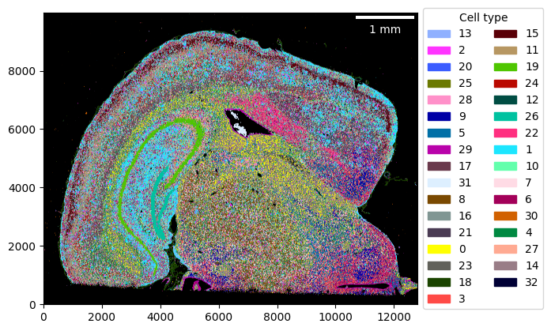
The assignment score can be helpful to identify regions with low confidence in the cell-type assignment. This is especially useful when using pre-existing cell-type signatures as it might highlight regions where we couldn’t map any cell-type with high confidence and therefore might indicate that cell-types are missing in the reference.
_ = brain.plot_assignment_score(remove_background=True)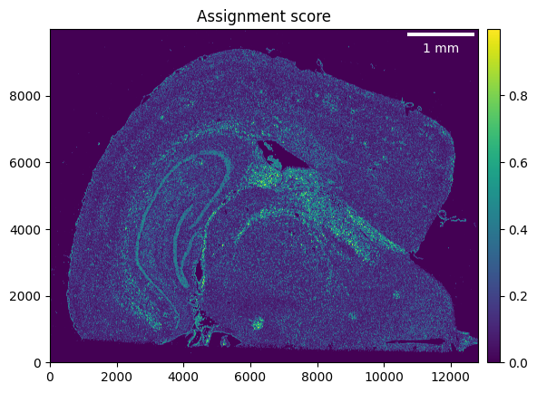
kde_per_celltype = pd.DataFrame(
{
"kde": brain.total_mRNA_KDE.flatten(),
"celltype": pd.Categorical.from_codes(
brain.celltype_map.flatten(), categories=brain.celltypes
),
}
).dropna()
celltype_threshold = (
kde_per_celltype.groupby("celltype", observed=True).quantile(0.5)["kde"] / 2
).to_dict()
min_t = 0.02
celltype_threshold = {
ct: (t if t > min_t else min_t) for ct, t in celltype_threshold.items()
}
brain.filter_background(celltype_threshold)_ = brain.plot_celltype_map(cmap=cmap)We can zoom-in by defining the ROI that we want to plot.
roi = ((1_000, 4_500), (4_000, 6_000))
_ = brain.plot_celltype_map(cmap=cmap, crop=roi, scalebar_kwargs={"box_alpha": 0.7})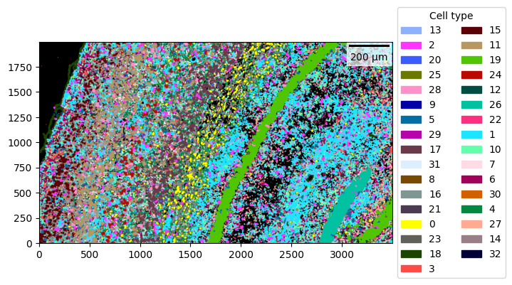
We can also highlight only one/few cell-types by removing the rest from the colormap.
cmap2 = {"0": "yellow"}
_ = brain.plot_celltype_map(cmap=cmap2, crop=roi, scalebar_kwargs={"box_alpha": 0.7})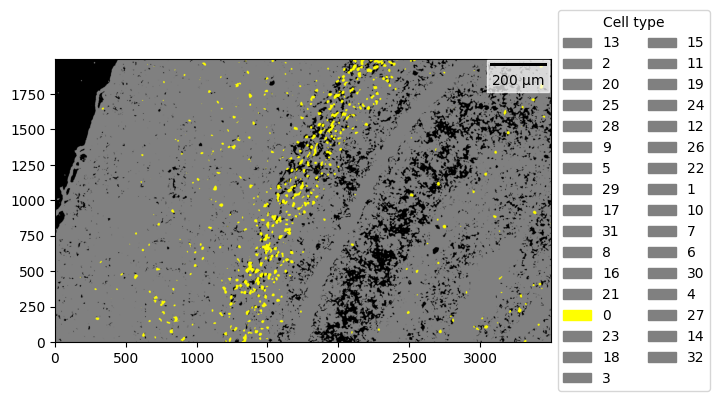
Visualizing the gene expression can help rationalizing the assigned cell-types.
_ = brain.plot_KDE(gene=signatures["0"].idxmax(), crop=roi)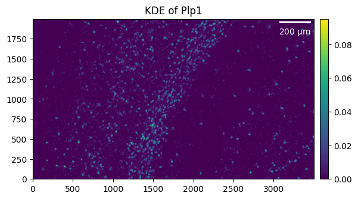
_ = brain.plot_KDE(gene=signatures["18"].idxmax(), crop=roi)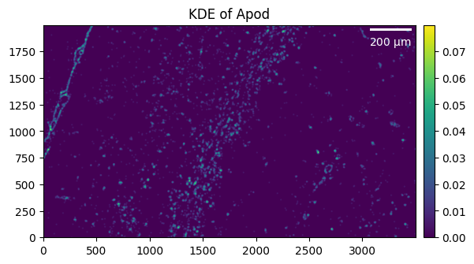
Bonus task: Supervised analysis
Try using sainsc for a supervised analysis leveraging the cell-type signatures obtained from your previous segmentation-based analysis workflow.